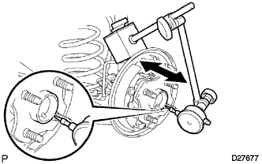
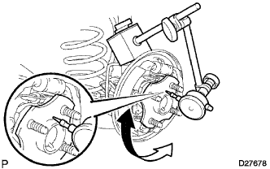

Axur System (4WD) function inspection |
| 1. Rear axle swing and axial rattling inspection |
Remove the rear tire
Remove the rear brake drum
Rear Axle Hub Hub Bearing Axial Ruts Inspection
|  |
The dial gauge is set in the position of the rear axle hub, and the rattling direction of the rear axle hub bearing is inspected.
Rear axle hub swing inspection
|  |
Set the dial gauge in the position of the rear axle hub to check the swing of the rear axle hub.
Rear brake drum installation
Rear tire installation